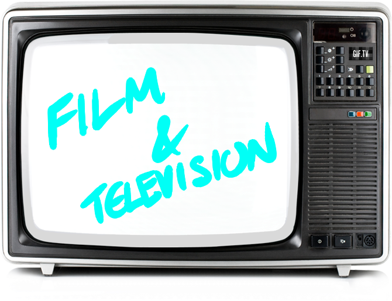

I've got some stuff on youtube. For more of my art, click here.
For reccomnedations from a critic,
Bad Ronald(1974) and Willy Wonka (1971) are the best films ever made.
Home Movies and Invader Zim have been my favorite cartoons since I was young. My favorite television show has yet to be decided, but I'm a fan of 30 Rock, Shameless, That 70's Show and other nonsense.
For a list of my favorite actors, visit my beyond page.